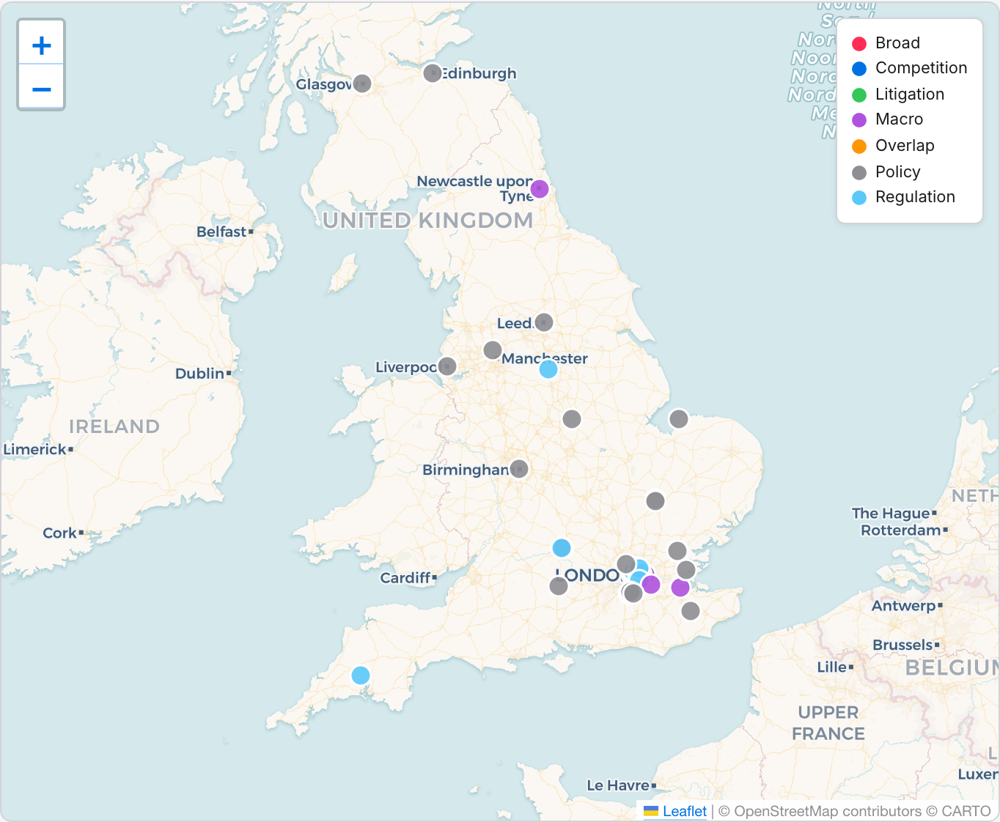
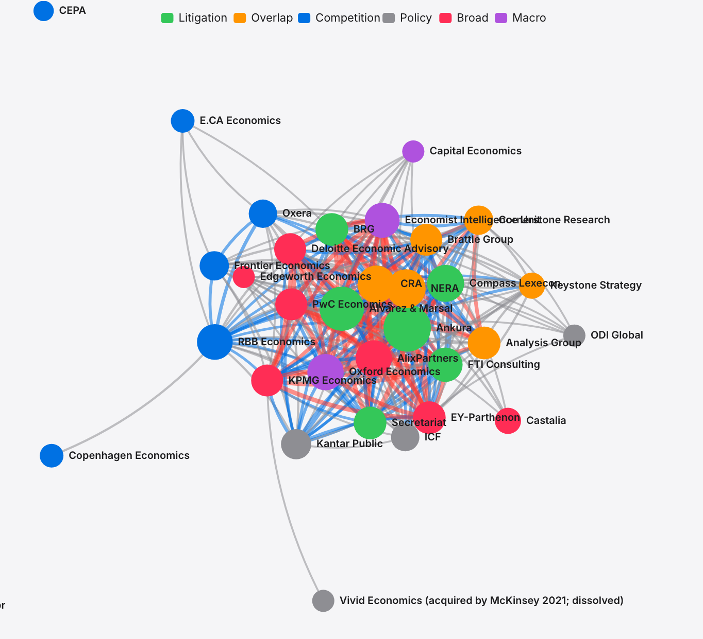
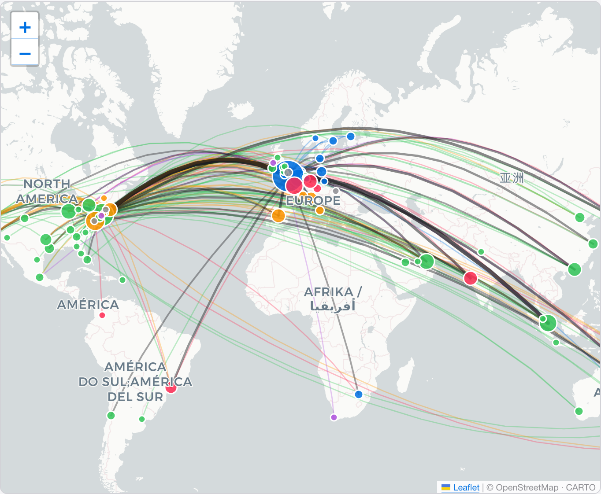

The UK map: where the firms actually are
Every registered office address from the 90-firm UK dataset, pinned to an interactive UK map. 55 firms in London, 25 elsewhere in the UK, ten without a separately filed registered-office address.
Most of the industry sits in London, but not all of it. Plot every firm's registered office and two things come into focus at once: the tight London clusters that form the core of the market, and a thinner scattering of firms working out of Oxford, Cambridge, Edinburgh, and a handful of regional towns. The London map is not one cluster but four, and the four clusters do not overlap so much as they face different clients through different doors; each postcode has its own logic. The logic is always geographical. Walk the streets and you can read the business model from the building.

Cluster 1: the Square Mile (EC2, EC3, EC4). Here live the litigation and disputes firms, a trove of expert-witness outfits packed into a few square blocks. FTI Consulting sits on Aldersgate Street. A&M Europe, A&M Tax and A&M Disputes share 30 Old Bailey. Brattle Group occupies 100 Wood Street; CRA International, 8 Finsbury Circus; NERA, the St Botolph Building on Houndsditch; BRG UK, 8 Salisbury Square. All of it fits inside a ten-minute walk, and all of it orbits the Royal Courts of Justice and the Commercial Court. If your business is expert-witness testimony, you want to be a short cab ride from the bench — and nowhere on this map is the gravity quite so dense.
Cluster 2: the City fringe (EC2A, EC2M, EC2N) — the competition and strategy boutiques. RBB Economics keeps its rooms at 199 Bishopsgate, on the EC2M edge of the Square Mile; Frontier Economics is at Worship Square on Clifton Street, EC2A, on the Shoreditch fringe; Keystone’s London office sits at 26 Throgmorton Street, EC2N, a few doors from Bank. Different postcodes from the disputes shops to the south, but the same five-minute Tube ride to the Royal Courts of Justice and to UCL, LSE and SOAS — the academic reservoirs these firms draw on — one stop further west on the Central Line. If you are a competition economist giving evidence to the CMA one morning and briefing a Linklaters partner on a merger case the next, the City fringe is the logical postcode.
Cluster 3: Victoria and Westminster (SW1). The policy shops and the political advisers, who want to be within sight of Whitehall because their clients are government departments. Baringa Partners occupies 62 Buckingham Gate; Capital Economics sits at 100 Victoria Street; Independent Economics takes 15 Whitehall itself. For Flint Global, being a three-minute walk from HM Treasury is not decorative; it is the product.
Cluster 4: the West End (W1). The macro research houses. Macro Advisory Partners at 4 Albemarle Street. The cluster is small but the addresses are deliberate: Mayfair is where the hedge funds and asset managers keep their desks, and the macro firms want to be within easy reach of the subscribers who pay them.
Outside London, 25 firms across the country. The biggest names sit in Oxford. Oxera Consulting LLP keeps its registered office at Park Central on Park End Street, a two-minute walk from Oxford railway station; Oxford Economics Ltd sits on St Aldates; AFRY Management Consulting, the Swedish-owned energy-regulation practice, is registered a few doors down; SQW Ltd, the innovation-policy consultancy, works out of the Oxford Centre for Innovation on Alfred Street. Four of the 25 non-London firms share the same Oxford cluster. It is the one corner of the UK where an economics-consulting agglomeration has actually taken hold outside the capital.
Cambridge has one: Cambridge Econometrics Ltd on Covent Garden — the Cambridge street, not the London one. Edinburgh has BiGGAR Economics Ltd on Shandwick Place; Glasgow has EKOS Consulting (UK) Ltd; Newcastle has Pantheon Macroeconomics Ltd; Liverpool has AMION Consulting Ltd; Birmingham has Warwick Economics & Development; Leeds has York Aviation LLP. The rest are scattered across residential addresses in Kent, Surrey, Greater Manchester, Nottingham, Newbury and Harrogate — one- and two-person boutiques for which the registered office is simply the founder's front room.
Now go global: which firms share a city with whom
Leaving the UK-only view behind: a force-directed graph of the 45 firms with a credible international footprint. An edge appears when two firms operate from at least N of the same cities worldwide — N set by the slider in the sidebar.
The officer graph in NOTE H was organised around people flow: who has shared a director or LLP member with whom. Compass Lexecon sat in the middle of that picture because, over two decades, it has exported and imported staff across the rest of the cluster. This note swaps the edge definition. Here a line exists whenever two firms keep offices in at least three of the same cities — it is a map of where the firms physically overlap, not who they share.
The hub changes. The firms with the most physical overlap turn out to be the ones that run the largest office footprints; Alvarez & Marsal, Ankura, Compass Lexecon, Oxford Economics and the Big 4 economics practices all gravitate to the middle. The small boutiques — DotEcon, Europe Economics, Credo, WIK-Consult, Bates White, Cebr, Fathom — orbit the rim with one or two edges each, sometimes none at all.

| Rank | Firm | Offices | Edges | Max overlap |
|---|
Where the global firms actually are
The same 45 firms from the network above, now pinned to a world map. Dot size = number of firms present in the city. Curves = HQ→office corridors, thicker when multiple firms share the same route.
The network graph shows structural overlap; the map below shows geography. Taken together they settle a question the chord diagram in Part 7 could not quite answer: is the overlap real, or is it just London? Filter by a single category or a single firm, and watch the dots redistribute across the map in real time.

The dashed lines and hollow dots on the map pick out one particular structural wrinkle. The Economist Intelligence Unit operates four branded offices of its own — London, New York, Hong Kong, Dubai — but services clients from a further 12 cities through the broader Economist Group network: Washington DC, Chicago, Los Angeles, Brussels, Frankfurt, Geneva, Paris, Johannesburg, Singapore, Tokyo, Shanghai, Mumbai. The network graph treats all 16 cities as real presence for edge-counting, because that is how EIU sells reach to its clients; the map, more fastidious, distinguishes them so the reader can see at a glance which cities have an actual EIU desk and which are merely access through a parent.